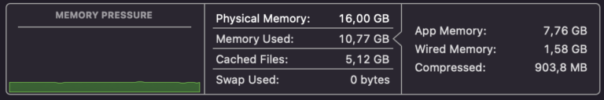

Intro
This entry is a bit… Different. I just acquired a new MacBook Air M1. And some things worried me and indeed I faced a couple of issues, so here is the story about that. In case someone has doubts, like I did.
I personally like Apple stuff. It’s a choice (not always a popular one, I’m aware – and that’s OK, each one their opinion :)). For me, the main argument was initially the battery life (at the time, I came from a rather bad experience with an ageing HP laptop, which battery would hardly survive for 15 minutes away from a plug); and then once you get used to the Apple ecosystem, the different things just “work” together – and that’s convenient.
So when Apple announced the M1 chip more than a year ago, the first thing I searched was whether Docker was supported on the new chip. It wasn’t. Indeed, it took some time, and so I didn’t think any further about it back then.
Come this year’s announcement of new Macbook Pro devices and new M1 Pro, M1 Max chips… And I’ll admit, Apple marketing must be working: I started wondering again about it all.
Decision
Now it’s not that I wouldn’t like the power of the newest thing (I’m certain I would :D). I’ve actually had a look and went to the store to see it “live”, and yes, the Macbook Pro 14″ with the M1 Pro chip is indeed nice. But maybe it’s too expensive for my taste. I mean yes, Apple devices will be never really be considered cheap anyway, so if price is a factor… But then there is pricey and pricey. I just wouldn’t do it.
In the end, I settled for the one-year-old model Macbook Air M1. It’s (quite a bit) more reasonable in price (though not cheap), and if I’m being honest with myself, it covers my needs. I was already using a Macbook Air, albeit a somewhat older version (6.5 years old by now), and I was mostly OK, so I knew the new version would be “sufficient”. (Sure, the 14″ screen Pro with 64GB of RAM and its gazillion GPUs (that I wouldn’t really use) sounds very nice, and yes, more power could in theory be useful in some very specific situations).
But in this case, I came from an Early 2015 Macbook Air with 8GB of RAM, and moved to the 2020 Air M1 with 16GB, and well, let’s just say I can definitely tell the difference!

So the 16GB of RAM was important – actually, increasing the RAM was a main decision factor for me, as I wanted to be able to run different containers AND VMs all at the same time (yes, 32GB would be nice, too, but that was still a stretch, and I couldn’t come up with a use-case that would justify the expense). Last time I switched devices (from an older Macbook Air, actually) it was because I actually needed more than the 4GB I had settled on before, so I moved to an 8GB version. This time around, more RAM is also a reason for the change. Incidentally, more RAM means less disk access too, so longer life for the Disk – at least in theory (see below: Swap usage at 0 :)).

In the end, the change meant for me:
Twice the RAM,
twice the disk size,
twice the disk speed (at least that’s what I read – didn’t check),
twice the number of CPU threads (actually, 8 Cores instead of two – and better/faster ones, the older Mac is sporting 1.6GHz i5 dual core…)
And it costed me about half of the Macbook Pro 14″ version I also (really) considered. Granted, it’s not the same. But all in all, I’m very happy with the computing power gains (I don’t do any video or photo editing for instance), and it hurts the pocket a little less…
Caveats
I don’t use it much, but as I was forced to run a Windows (to test the Simio simulation software), I recently re-installed Oracle VirtualBox on the older Mac. That’s not an option anymore. So I’m testing Parallels, and actually had to create a Windows Insider Account to be able to download the Windows 11 ARM preview. In the end, it works, so that’s good. But Parallels costs money where Oracle VirtualBox didn’t. I’ll have to check whether I can get a discount through the University maybe, for the Parallels license. (After all, I wouldn’t need it if it wasn’t for them :P).
The other thing that was bothering me the first night was the Docker image for RStudio Server: The base images I’m used to for R on Docker (including RStudio) just won’t “simply” work, they’re meant for AMD64 (and actually, the container boots, but then RStudio won’t get pass the login, not to mention I couldn’t get R to install packages from command line either) and unfortunately I needed an alternative, fast (I have some homework to do). I guess the great people behind the “Rocker” images haven’t had the time yet to prepare it for ARM64v8 support. I hope this will change, but otherwise, I’ll keep going with other options…
The good news is some people have been working on that M1 compatibility thing already (thank them! see references), and so on DockerHub one can find the “amoselb/rstudio-m1” image, which does work. The only thing is, it’s big. After adding some libraries, it’s above 5.5GB (I’m used to seeing 3.5GB images with the libraries I usually use, so I’ll need to work on maybe shrinking that thing at some point). Maybe the easiest will be (for now) to trim down the image itself by removing some unnecessary Ubuntu packages. But all in all the important (and urgent) thing is, it works. A couple more packages were needed to get the LaTeX generation to work, but that wasn’t too hard either. I’ll make sure to create a Dockerfile for it and post it on my GitHub account when I get the chance. (Note that Docker required Rosetta2, in its current version.)
Other things
One of the main reasons for me to use Docker is that I can do stuff without installing much on the Mac itself. In my mind, that way I’m keeping my laptop clean 😀 I do use different browsers, and faced no real issue on that front.
For the University, I’m also using MatLab, and as I was in a hurry I installed it directly on the Mac, that worked flawlessly too, thankfully. However at some point I’ll have to look into getting it to run from a container, instead of on the Mac itself – but then I’ll have to look how to go about the X11 for the GUI (it seems XQuartz will do the trick), and see if the ARM64 thing will be a bother or not (it seems it will for that particular container image)…
And as a note, I use from time to time ActivePresenter, which also seems to be working OK out of the box.
Otherwise, moving from the old to the new Macbook Air was REALLY easy: there is this “Migration Assistant”, and even though it’s not fast (but then again I migrated quite a few GBs), it just works. To my point: the Apple ecosystem all works together nicely.
Conclusion
The above is a screenshot of the M1 CPU usage, while using two browsers, Docker with the mentioned image for RStudio & Matlab. Battery-wise, I have been using it a bit for 3 days, done the data movement from the older Mac, updated the OS to the latest version, installed the few things I needed, and done some (rather simple) tests, and I’m still above 20% battery, while I have not yet ever switched it off. And that’s just great for me.
Whether or not one can/should justify to oneself the cost of a new Apple device, that’s for each person to pounder. But although it wasn’t straightforward and I’m still a bit worried about the Docker+RStudio Server container setup, the good news is that it wasn’t too bad either to migrate to the ARM chip.
All in all, this new laptop is MUCH faster, and I’m very happy with it (for now :)).
Resources
Getting Windows 11 Preview to work, step-by-step with Parallels
Docker image with RStudio Server and M1 compatible (basic tests OK)
More info on the topic of Docker, RStudio Server, M1 on GitHub